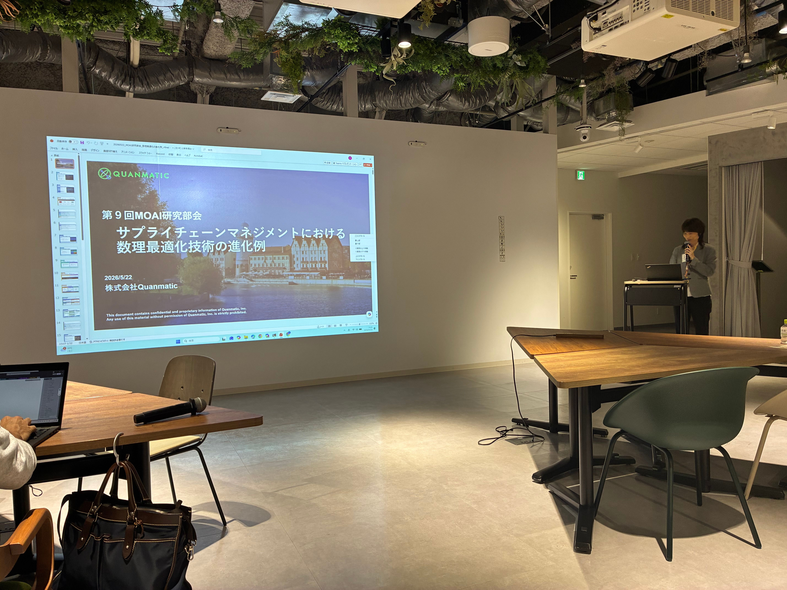
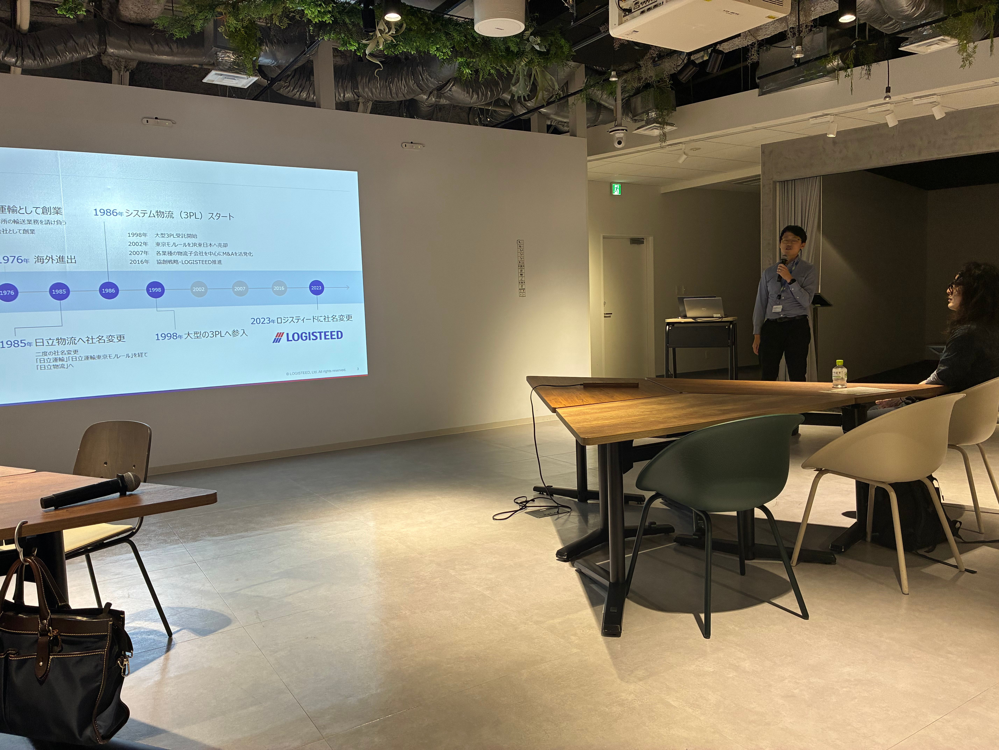

第9回 MOAI 研究部会
場所：ロジスティードカフェ（所在地：東京都中央区京橋2丁目9番2号 ロジスティードビル内） ‣ 時間：15:30-17:30 （会場参加者２１名、懇親会参加者１２名）
・ MOAIフォーラム及びロジスティードご紹介 15分
・ 講演① サプライチェーンマネジメントにおける数理最適化技術の進化例・・・細田順子（Quanmatic) 60分（45分発表＋15分質疑）
・ 休憩 15分（270°シアター）
・ 講演② ロジスティードにおける最適化技術の適用事例：30分（20分＋10分） 藤波翔平（ロジスティード）
〇発表概要
講演① サプライチェーンマネジメントにおける数理最適化技術の進化例
人・モノ・金・情報といった有限なリソースを効率的に活用し、利益を最大化することを目的とするサプライチェーンマネジメントに対しては、従来より数理最適化技術が広く適用されてきた。近年では、進化の著しい生成AIをサプライチェーンマネジメントへ適用する取り組みが進められている。また、将来的に革新的な計算手法として期待されている量子計算技術の活用を試みる研究も進展しつつある。本発表では、サプライチェーンマネジメント分野を対象に、これらの技術とともに進化していく数理最適化技術の取り組みについて、具体例を交えながら紹介する。
講演② ロジスティードにおける最適化技術の適用事例
近年、需要変動やコスト上昇、労働制約などにより、サプライチェーン全体を俯瞰した最適化の重要性が高まっている。本発表では、ロジスティードがSCD（サプライチェーンデザイン）を通じて、拠点配置や物流ネットワークを数理最適化・シミュレーションにより定量評価し、実行可能な意思決定を支援してきた最新の適用事例を紹介する。

